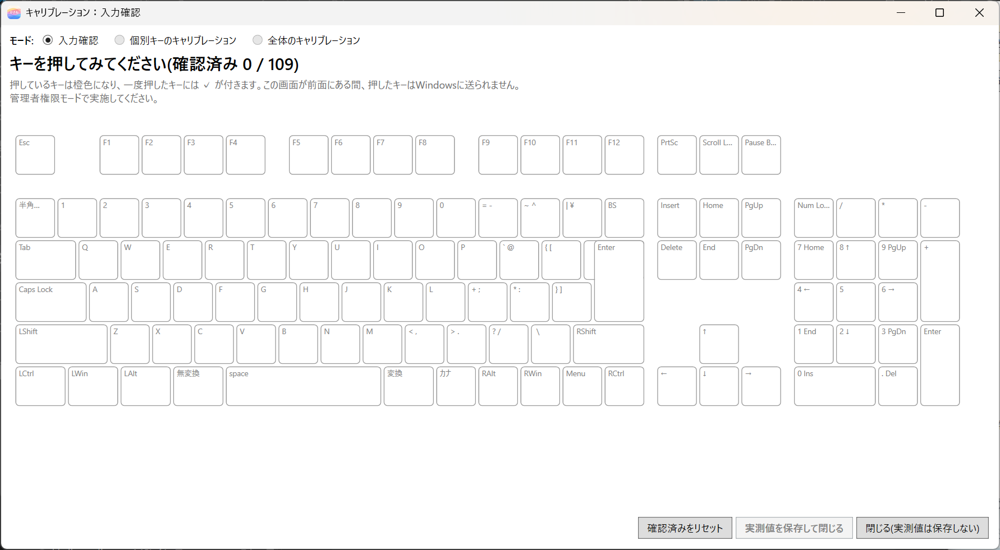
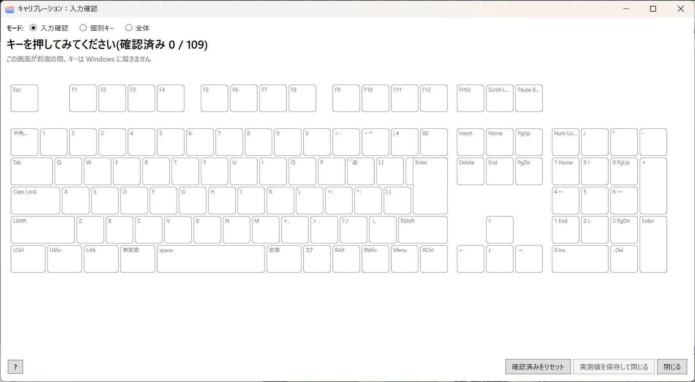
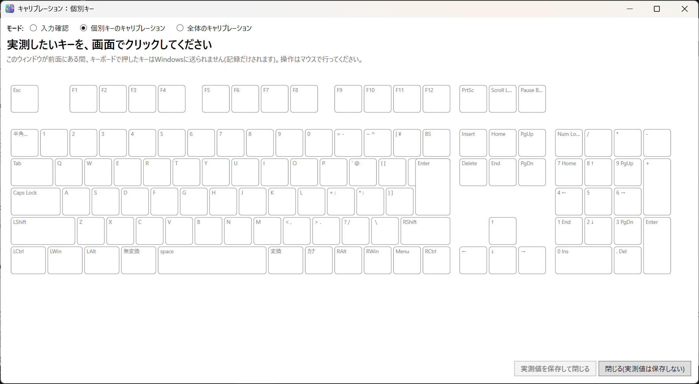
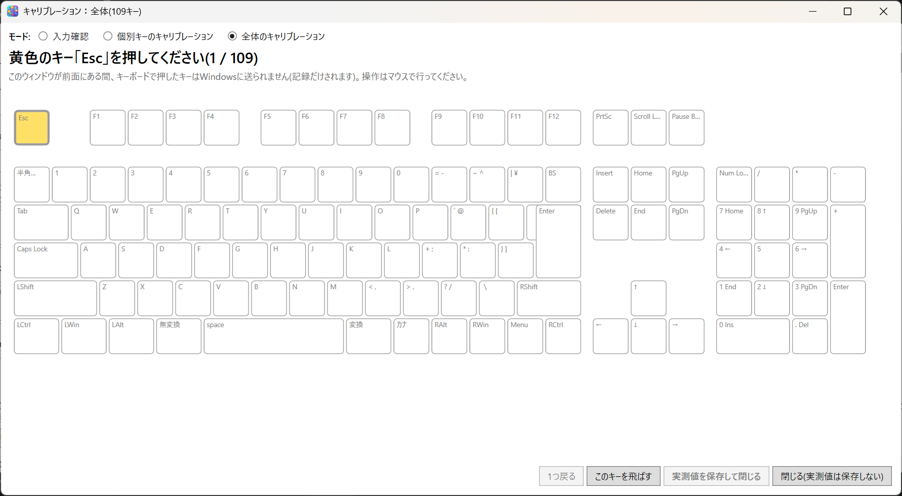

6. キャリブレーション
キャリブレーションは、キー図の上のキーが、実際のどのキーかを、キーを押して確かめる作業です。
標準的な JIS や US のキーボードでは、キー図のどのキーが実際のどのキーかは、レイアウトから自動で決まります。そのため、キャリブレーションは通常は要りません。次のような場合に行います。
- キー図に、赤い枠のキー（どのキーか分からないキー）があり、そのキーを変更したい
- 設定したのに、違うキーが入れ替わる
開く
エディタの画面下の キャリブレーション... を押します。

画面の上の モード で、次の 3 つから選びます。最初は「入力確認」です。
| モード | 管理者権限 | 内容 |
|---|---|---|
| 入力確認 | 要らない（管理者のほうが正確） | キーを押して、キー図の対応するキーが光るかを確かめる |
| 個別キーのキャリブレーション | 必要 | 実測したいキーを選んで、実際に押して測る |
| 全体のキャリブレーション | 必要 | 示されたキーを、順番に押して測る |
画面が前面にある間は、押したキーは Windows には送られません。Enter や Win キーを押しても、何も起きません。操作はマウスで行ってください。別のウィンドウをクリックすると一時停止し、キーは普段どおりに戻ります。
入力確認
キーボードのキーを押すと、キー図の対応するキーが橙色になり、離すと戻ります。一度押したキーには ✓ が付きます。
全部のキーを一通り押して、✓ が付かないキーや、押したキーと違うキーが光るキーがあれば、キャリブレーションが必要です。確認済みをリセット で、✓ を消せます。
管理者のとき
キーを、ドライバから直接受け取ります。画面には、その旨が出ます。リマップで置き換える前の物理キーが見えます。右 Shift や、カタカナひらがな、英数、半角/全角のキーの押下と解放も、確実に届きます。選んでいるキーボードの入力だけを見ます。

管理者でないとき
画面に「管理者権限モードで実施してください。」と出ます。この場合は、Windows のキー入力（低レベルキーフック）で確認するため、次の制限があります。
- 確認できるのは、リマップで置き換えた後のキーです。置き換えている場合は、先に OFF(素通しに戻す) を押してください。
- どのキーボードの入力かは区別できません。
- 右 Shift が拡張キー（E0 付き）として見えるため、扱えません。
- 一部のキーで、解放が届かず、押したままに見えることがあります。
個別キーのキャリブレーション
- キー図の、実測したいキーをクリックします。黄色になります。
- キーボードの、対応するキーを押します。
- 続けて、別のキーも実測できます。
- 終わったら 実測値を保存して閉じる を押します。

キー図の上のキーを右クリックして、このキーを実測する... を選んでも、同じことができます。
全体のキャリブレーション
黄色で示されたキーを、順番に押します。

| ボタン | 内容 |
|---|---|
| 1つ戻る | 直前のキーに戻る |
| このキーを飛ばす | そのキーボードにないキーを飛ばす |
| 実測値を保存して閉じる | 実測した値を保存して閉じる |
| 閉じる(実測値は保存しない) | 何も実測していないとき（入力確認だけのとき）に使う |
実測した値を消す
実測値を消して、既定のスキャンコードに戻すには、キー図の上のキーを右クリックして、実測値を消して既定のスキャンコードに戻す を選びます。
結果の反映
実測した値が標準と違うキーは、キー図の上で橙色の枠になります。結果は、キーボードに適用(ON) を押したときに反映されます。
実測した値は、別の機器には持ち越されません。キーボードを買い替えたときは、やり直してください（15. バックアップと移行）。
既知の制限
右 Shift を E0 36 で出すキーボードは、キャリブレーションで扱えない場合があります。実機では確認できていません。